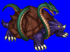
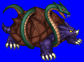
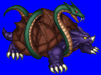
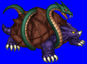

Height: ??? Weight: ???
Habitat: Hill, mountain Origin: China
Meaning: Chinese words "gen" for black and "bu" for shell.
One of the four beast gods of Chinese mythology. It represents the cardinal direction north and is the king of shelled creatures. It is the fusion of the holy turtle and holy snake for the same lore. It is one of the four auspicious animals, the others of which are the white tiger, red sparrow, and blue dragon. Its black shell symbolizes the night and the death which takes place at the onset of the winter months, and represents stability and protection.
See also: Red Sparrow, White Tiger, Blue Dragon, and Ki-Rin.